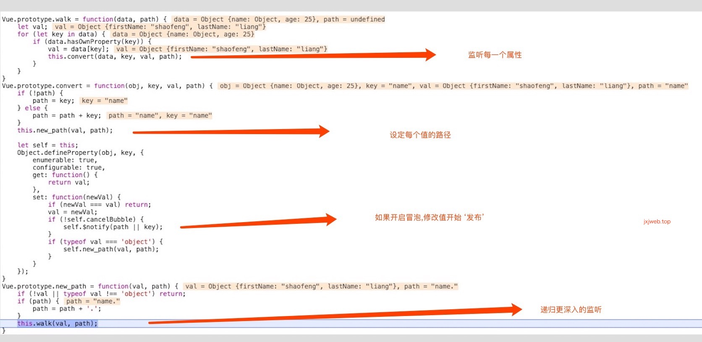
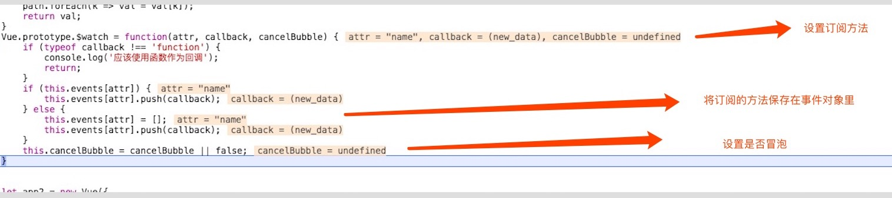
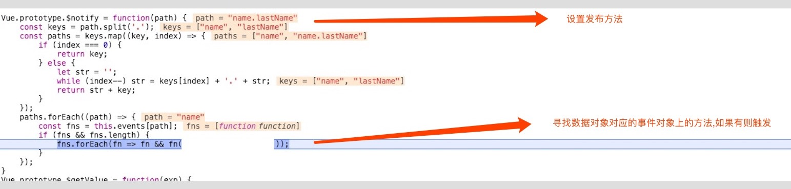

vue核心原理03
动态数据绑定:如何监听其属性的读取与变化？
也就是说，如何知道程序访问了对象的哪个属性，又改变了哪个属性？
知识点:事件传播机制
问题
深层次数据变化如何逐层往上传播
let app2 = new Observer({
name: {
firstName: 'shaofeng',
lastName: 'liang'
},
age: 25
});
要实现的结果如下：
app2.$watch('name', function () {
alert('我的姓名发生了变化!');
});
app2.data.name.firstName = 'hahaha';
// 输出：我的姓名发生了变化!
firstName 和 lastName 作为 name 的属性，其中任意一个发生变化，都会得出以下结论："name 发生了变化。"这种机制符合”事件传播“机制，方向是从底层往上逐层传播到顶层。 DOM也一样,比如：“点击某一个DOM元素，相当于也其父元素和其所有祖先元素。”（当然，你可以手动禁止事件传播） 所以，这里的本质是："浏览器内部实现了一个事件传播的机制"!
原理




js源码
function Event() {
this.events = {};
}
Event.prototype = {
on: function(attr, callback) {
if (this.events[attr]) {
this.events[attr].push(callback);
} else {
this.events[attr] = [callback];
}
},
off: function(attr) {
for (let key in this.events) {
if (this.events.hasOwnProperty(key) && key === attr) {
delete this.events[key];
}
}
},
trigger: function(attr, ...arg) {
this.events[attr] && this.events[attr].forEach(function(item) {
item(...arg);
})
}
}
function Vue(data) {
this.data = data;
this.walk(data);
this.watch = new Event();
this.cancelBubble = true;
}
var v_father = Vue.prototype;
v_father.walk = function(data, path) {
let val;
for (let key in data) {
if (data.hasOwnProperty(key)) {
val = data[key];
this.convert(data, key, val, path);
}
}
}
v_father.convert = function(obj, key, val, path) {
if (!path) {
path = key;
} else {
path = path + key;
}
this.new_path(val, path);
let self = this;
Object.defineProperty(obj, key, {
enumerable: true,
configurable: true,
get: function() {
return val;
},
set: function(newVal) {
if (newVal === val) return;
val = newVal;
if (!self.cancelBubble) {
self.$notify(path || key);
}
if (typeof val === 'object') {
self.new_path(val, path);
}
}
});
}
v_father.new_path = function(val, path) {
if (!val || typeof val !== 'object') return;
if (path) {
path = path + '.';
}
this.walk(val, path);
}
v_father.$notify = function(path) {
const keys = path.split('.');
const paths = keys.map((key, index) => {
if (index === 0) {
return key;
} else {
let str = '';
while (index--) str = keys[index] + '.' + str;
return str + key;
}
});
paths.forEach((path) => {
this.watch.trigger(path);
});
}
v_father.$watch = function(attr, callback, cancelBubble) {
if (typeof callback !== 'function') {
console.log('应该使用函数作为回调');
return;
}
this.watch.on(attr, callback);
this.cancelBubble = cancelBubble || false;
}
jxjweb.top